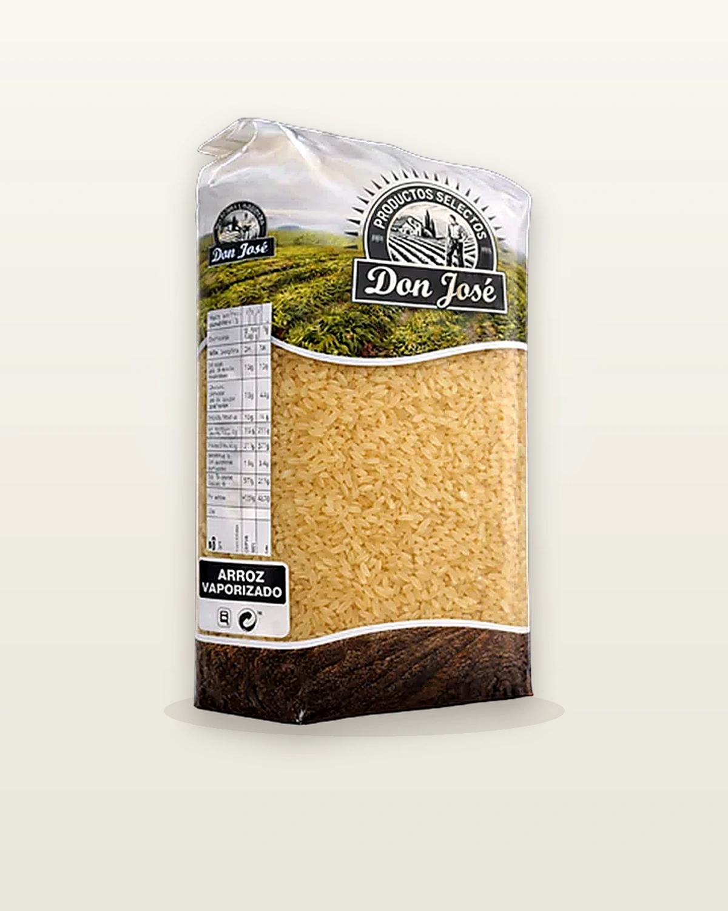

🌾 Arroces
Arroz Vaporizado
Presentación · 1 kg · 5 kgArroz sometido al proceso de vaporización (parboiled): el grano queda más firme y suele mantener mejor la forma tras la cocción, con menor tendencia a quedar pastoso. Muy práctico para preparaciones donde interesa un arroz suelto y uniforme.
Grano firme
Arroz más suelto
Cocina versátil
Sin conservantes
Aplicaciones
¿Para qué se usa?
Arroz suelto
Ensaladas de arroz
Guarniciones
Arroces combinados
Cocina de gran consumo
Producto
Características & Beneficios
Datos del producto
TipoArroz
ProcesoVaporizado (parboiled)
TexturaGrano firme, suelto al cocer
CocciónSegún uso (consultar ficha)
NotaDistinto al arroz redondo crudo convencional
Presentación1 kg · 5 kg
Por qué elegirlo
Firmeza en el plato
Comportamiento estable en cocciones donde se busca menos deshacerse del grano.
Menos pastoso
Útil cuando se quiere separar bien el grano en el resultado final.
Formato familiar y hostelería
Sacos de 1 kg y 5 kg para distintos volúmenes de uso.
Sin conservantes
Solo arroz. Sin aditivos ni colorantes.
Para distribuidores
Ficha técnica
| Peso neto | 1 kg · 5 kg |
| Variedad | Arroz vaporizado (parboiled) |
| Origen | Consultar ficha definitiva |
| Tiempo de cocción | Consultar ficha definitiva |
| Categoría | Calidad Seleccionada |
| Formato de venta | Según presentación (1 kg y 5 kg) |
| Conservación | Lugar fresco y seco, alejado de la luz directa |
| Sin | Conservantes · Colorantes · Gluten |
¿Interesado en distribuir este producto?
Contacta con nuestro equipo para solicitar información sobre precios, formatos y condiciones de distribución.